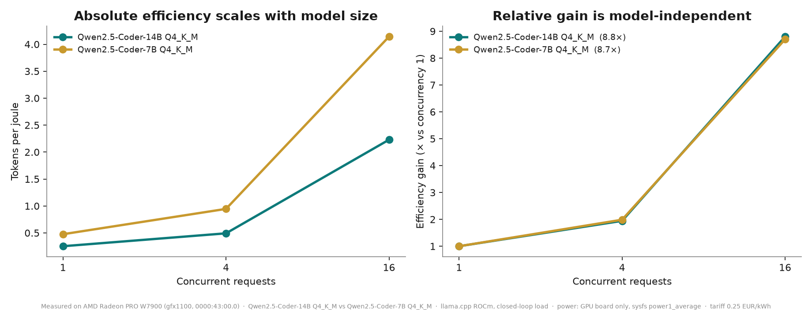

On-prem AI agents have no invoice. costbench gives them one — priced in joules measured on the card that ran the work.
Two models, one twice the size of the other. Normalise each curve by its own concurrency-1 value and they coincide within 1%.

8.70× on the 7B, 8.80× on the 14B — a property of the architecture, not of one model. Four independent sessions, two load patterns, achieved concurrency verified per run.
The 14B/7B tokens-per-joule ratio is 0.53 / 0.52 / 0.54 at concurrency 1 / 4 / 16. Double the weights, half the efficiency: the signature of a memory-bandwidth-bound decode.
A gateway meters every request against the measured curve; an agent reports what each task cost. One recorded task: 194 tokens · 404 J · €0.000028 · 0 bytes egress — the zero verified against a local audit ledger, not asserted.